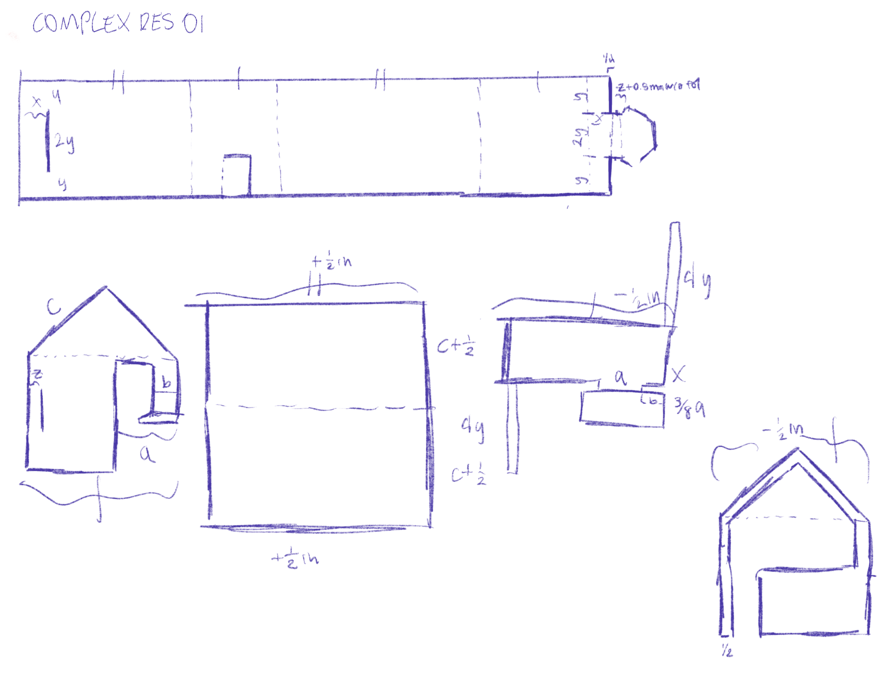
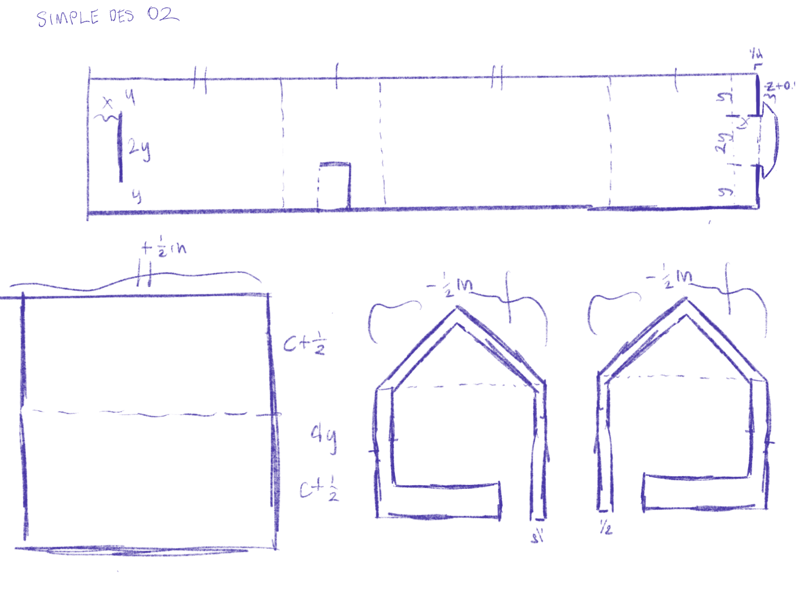
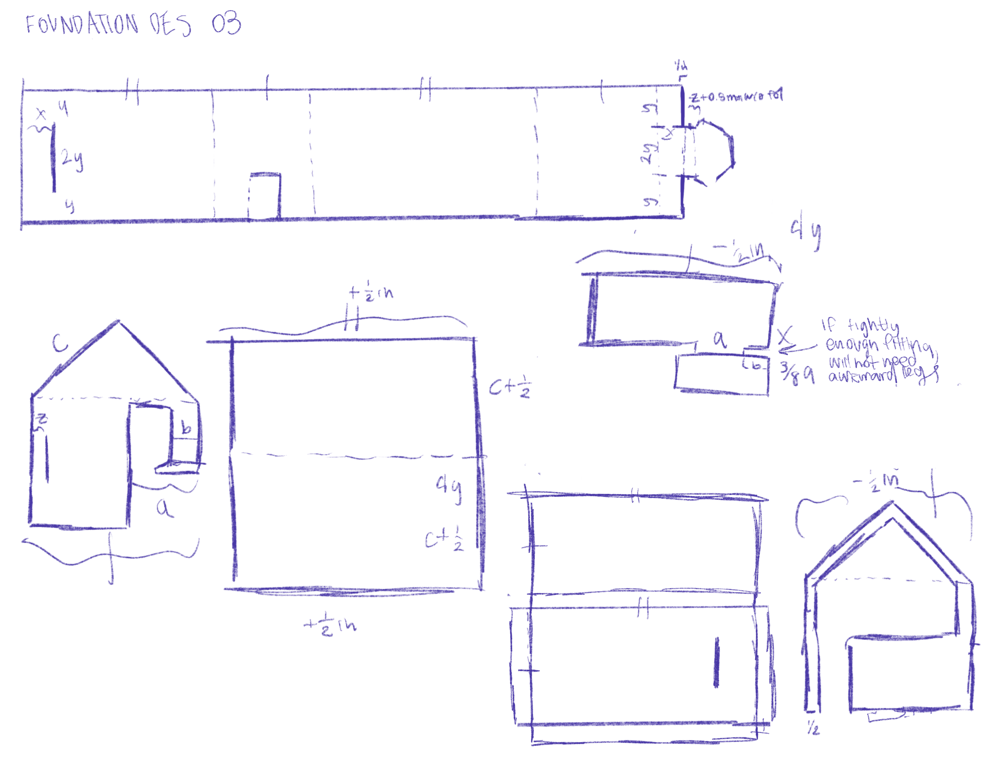
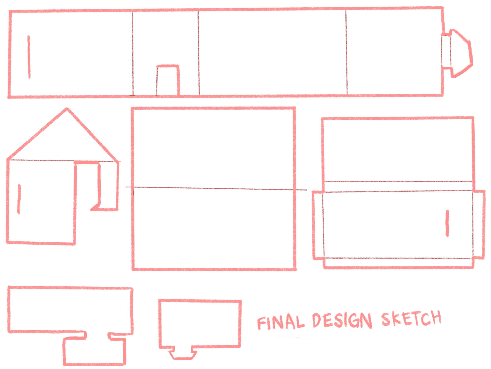
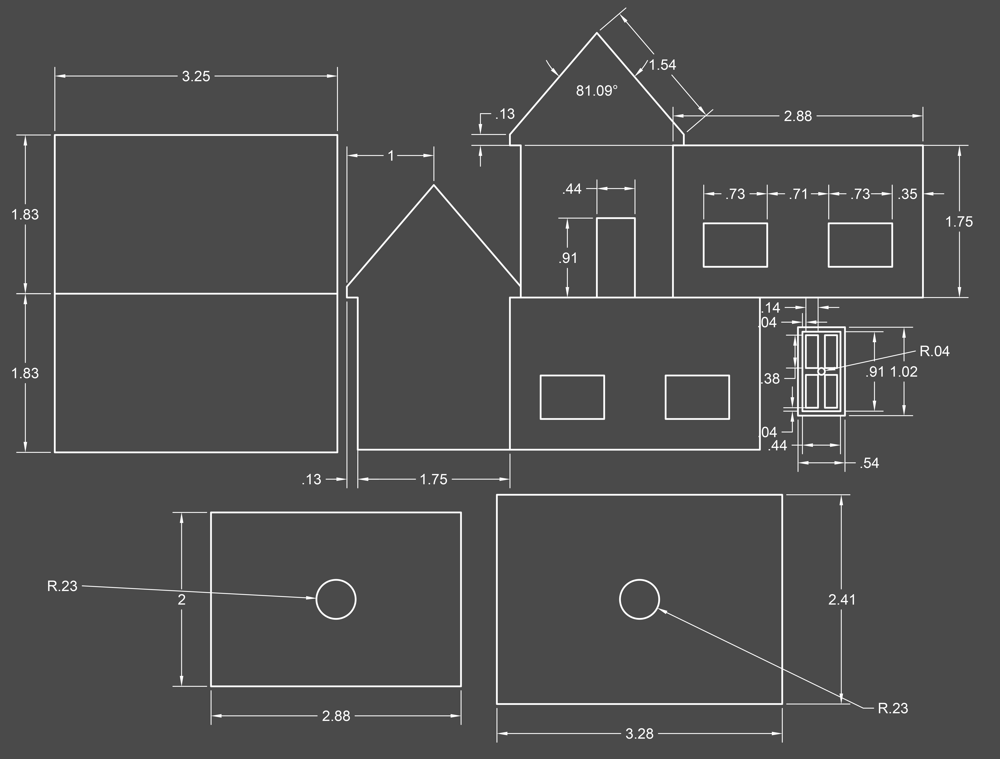
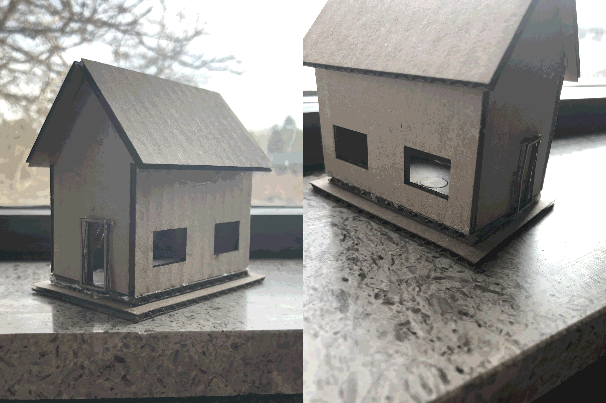

Design a 3-dimensional product to sit on a table or hang from a string. It must be able to ship flat to markets overseas. You will design the 3D object in CAD, then laser cut the flat pieces out of cardboard for assembly.
Constraints:
It is important to have a flat, shippable product in any business. When shipping in masses and individually, volume is a big concern. Weight is not an issue, but the space that things take up in crates is; if a shipping company creates a product that has to be tetris-ed into crates to fit a substantial amount, it will cost more per product to the customer and the business.
However, in a product that takes up a 8.5X11X3 inch footprint, which is easily stackable (take, for instance, printer paper), then you can ship thousands of the product on just one ship or airplane. This saves time, cuts costs on both ends, and increases productivity.
During my visit to TPG Architecture, I talked with many architects and interior designers. Many of them suggested that their designs and materials chosen for any particular client is strongly dictated, especially projects outside of the Metropolitan NYC Area, by the transportation available, or the transportation budget. It may be decided to use some sort of plastic or rubber instead of concrete or wood, even if the latter better suits aesthetic, because transporting hundreds of tons of hardwood is not efficient.
This helps in my project to understand the importance of shipping packages, and they showed images to help visualize how they transport materials on to the site.
For my secondary source, I don’t have one specifically. Rather, I searched up cardboard, flat-to-3D objects and examined how they fit together, if I could. This was really helpful in a multitude of ways, as it showed me how different types of these models can fit together (either by notches, glue, Tetris pieces, etc). It gave me a couple of ideas for how I could make my house design work.
As stated in the previous section, there are many different existing solutions for a cardboard cutout design. One that I may go with is the slot fitted design, where each cross-section has a small section cut out of them, one on the bottom and one on the top, which is fitted together.
   
I know that I will have a successful deisgn when I can look at the design and undertstand exactly what goes where and how. This is my main factor for deciding if my design is successful but I will also judge based off of:
| Design | Understand | Tolerant | Efficient | Aesthetic | Overall |
|---|---|---|---|---|---|
| Design 1 | 3 | 2 | 2 | 4 | 11 |
| Design 2 | 4 | 4 | 4 | 3 | 15 |
| Design 3 | 4 | 4 | 4 | 5 | 16 |
My plan for completing this in required time was to have my house fully lazered out before we went on christmas break. Unfortunately, I continuously forgot to bring cardboard (and was also unaware of any cardboard storage downstairs). Therefore, the draft cut was not done until Monday we got back from break.
In my initial "final design", I assumed the engraving process of the lazer cutter would cut a little deeps, or at least wider, than it did. For each wall, the engraving was supposed to allow it to fold inand create the corners of the walls, This did not happen and hindered the design. I had to gentely cut along every single engraved line just to make it move at all. I had to, essentially, completely redesign my house for it to reach my aesthetic and practicality standards.
I was trying to not use any glue in this project, but since the engraving was such an epic failure, I caved.


Video not of my own project.
With this, I finally had a working, practical, and aesthetically appealing design for this house. An Ant-sized cardboard house.
Share an assembly video for the final product.

Please Open Image in New Tab to zoom in further and explore the details of these photographs. Of my Ant House. My Tiny Boy.

A quick look into the fusion assembly process.